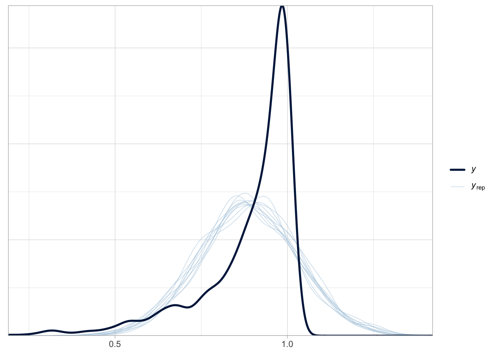
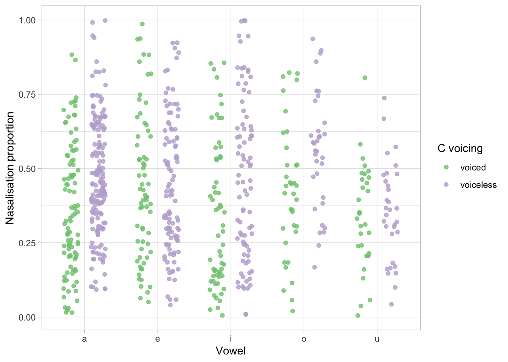
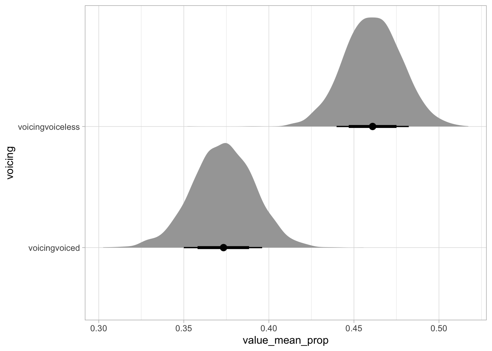

Bayesian beta regressions with brms in R: A tutorial for phoneticians
Abstract
Phonetic research frequently involves analyzing numeric continuous outcome variables, such as durations, frequencies, loudness, and ratios. Another commonly used outcome type is proportions, including measures like the proportion of voicing during closure, gesture amplitude, and nasalance. Despite their bounded nature, proportions are often modeled using Gaussian regression, largely due to the default settings of commonly used statistical functions in R (e.g., lm() and lmer() from lme4). This practice persists in teaching and research, despite the fact that Gaussian models assume unbounded continuous data and may poorly fit proportion data. To address this issue, this tutorial introduces beta regression models, a more appropriate statistical approach for analyzing proportions. The beta distribution provides a flexible framework for modelling continuous data constrained between 0 and 1. The tutorial employs the brms package in R and assumes familiarity with regression modeling but no prior knowledge of Bayesian statistics. The tutorial includes two case studies illustrating the practical implementation of Bayesian beta regression models. Data and code are available at https://github.com/stefanocoretta/beta-phon.
Keywords
acoustics, articulation, proportions, Bayesian regressions, beta distribution
Introduction
Phonetic research often involves numeric continuous outcome variables, like durations, frequencies, loudness and ratios (Abramson and Whalen, 2017; Coretta et al., 2023; Gick et al., 2013; Johnson, 2003; Kluender et al., 1988; Ladefoged and Johnson, 2014; Roettger et al., 2018; Rosen, 2005). Another commonly employed type of outcome variable are proportions: for example, proportion of voicing during closure (Davidson, 2016), vocal folds contact quotient (Herbst et al., 2017), gesture amplitude (Carignan, 2021), nasalance (Carignan, 2021). Moreover, virtually any measure can be MIN-MAX normalised, a procedure which transforms values so that they are in the range 0–1.
Regression models (and extensions like generalised additive models) have become a de facto standard for the statistical analysis of a variety of measures in phonetic research (Kirby and Sonderegger, 2018; Politzer-Ahles and Piccinini, 2018; Tavakoli et al., 2024). However, there is a tendency for researchers to use Gaussian distribution families (i.e. probability distributions for the outcome variable) for any measure that is numeric, irrespective of whether the measure is unbounded, like in truly Gaussian variables, or bounded, like in proportions. A possible reason is that the base R function for fitting regression models, lm(), and the lme4 function used to fit regression models with varying terms, lmer() from lme4 (Bates et al., 2015), both fit Gaussian regressions by default and the user does not have to specify the distribution family. This tacit default of using Gaussian models is also reflected in teaching practices, where significance test and models using the Gaussian distribution are the first to be taught (Baayen, 2008; Winter, 2020), due to their relative simplicity and the fact that regression models with other families are conceptual generalisations of Gaussian regression models. Figure 1 shows how poorly a Gaussian regression model fits beta-distributed data: the dark blue line is the density of data simulated to be distributed according to a beta distribution; the light blue lines are predicted distributions as generated by a Gaussian model of the data. The predicted Gaussian distributions over-predict values between 0.5 and 0.75 and under-predict values between 0.75 and 1. Moreover, the density peak (median) of the Gaussian distributions is lower than the peak in the original data.
While most researchers approach proportions with Gaussian regression models, proportion are not Gaussian by nature, since they are continuous variables bounded between 0 and 1. Thus, regression models with proportions as outcome variable should be fitted using a likelihood family that assumes such unit interval data. A common and flexible distribution for this purpose is the beta distribution. This tutorial introduces researchers to beta regression models in R using the package brms. Familiarity with regression modelling in R with a package like lme4 is assumed, but no prior knowledge of Bayesian statistics is necessary. The rest of the paper is structured as follows: Section 2 introduces the mathematical underpinnings of the beta distribution, Section 3 provides the readers with a brief explanation and justification of Bayesian regression models, while Section 4 and Section 5 illustrate how to fit Bayesian beta regression models with two case studies. The research compendium with data and code can be found at https://github.com/stefanocoretta/beta-phon.
The beta distribution
The beta distribution is often considered as the distribution for the modelling of unit interval data (Cribari-Neto and Zeileis, 2010a; Ferrari and Cribari-Neto, 2004). It has been extensively studied theoretically (Espinheira et al., 2008; Gupta and Nadarajah, 2014; Krysicki, 1999) and is used a baseline to compare other unit interval distributions against (Bonat et al., 2013; Kieschnick and McCullough, 2003; López, 2013). Specifically in Bayesian regression models, it was shown to perform well across a wide range of scenarios (Scholz and Bürkner, 2025, 2023), which is why we focus on the beta distribution in this tutorial.
We use a common mean parametrisation for the beta distribution with mean parameter \(\mu\), bounded between 0 and 1, and positive precision parameter \(\phi\) that is roughly proportional to the inverse of the variance \(\text{Var}(y) = \frac{\mu \, (1 - \mu)}{\phi + 1}\). That is, the larger \(\phi\) the smaller the variance of the corresponding beta distribution. While the mathematical details are not needed to understand the content of this tutorial, we still write down the density below for reasons of completeness:
\[ p(y \mid \mu, \phi) = \frac{1}{B(\mu \, \phi, \; (1-\mu) \, \phi)} \; y^{\mu \, \phi -1} \; (1-y)^{(1-\mu) \, \phi -1}, \]
where \(B\) is the Beta function, a complex integral for whose numerical approximation efficient algorithms exist in every programming language.
Bayesian regression models
Bayesian regression models are being increasingly adopted within phonetics and language research more broadly (Nalborczyk et al., 2019; Vasishth et al., 2018; Verissimo, 2021). Bayesian inference involves updating of prior probability distributions in light of evidence from data, to produce posterior probability distributions. In Bayesian regression models, model parameters are modelled as full probability distributions, rather than point estimates as in Null Hypothesis Significance Testing. Given the difficulty of analytical solutions of model equations, Bayesian regressions rely on sampling algorithms to reconstruct the posterior distributions. The statistical language Stan (Stan Development Team, 2017) employs efficient and robust Markov Chain Monte Carlo algorithms for fitting a variety of models, and the R package brms allows R users to interface with Stan from within R to fit Bayesian regression models (Bürkner, 2021, 2018, 2017).
The main practical advantage of Bayesian regression models over maximum-likelihood-based frequentist regression models, like those fitted with the lme4 package (Bates et al., 2015), is that Bayesian regression models don’t suffer from the convergence issues that models fitted in lme4 (Bates et al., 2015) and other packages (Cribari-Neto and Zeileis, 2010b) that fit frequentist models do, independent of sample size. A second, long-term advantage is that Bayesian regression models allow researchers to statistically re-use information from previous studies by specifying informative priors. While prior specification is one of the main features of Bayesian inference, in this tutorial we will use the default priors as set by brms. These are sensible priors estimated from the data that facilitate convergence but bear virtually no influence on the estimated posteriors. Specifying priors requires a great deal of precise quantitative knowledge, which in most areas of phonetics we still do not possess, so that using default uninformative priors is, for the time being, theoretically sound. For practical guidance on prior specification, see https://github.com/stan-dev/stan/wiki/Prior-Choice-Recommendations.
The output of Bayesian regression models is (posterior) probability distributions for the model parameters, through which researchers can quantify (un)certainty. Bayesian Credible Intervals (CrIs) can be calculated from the posterior distributions at several probability levels (e.g. 95, 90, 80, 60%) for a more complete view on estimated parameters. Bayesian CrIs indicate that at a certain probability levels the parameter’s estimate lies within that interval: so, for example, a 90% CrI [A, B] indicates that there is a 90% probability that the estimate is between A and B. Different probability levels correspond to different levels of confidence: the higher the probability the higher the confidence (always conditional on data and model). Readers interested in a full and accessible exposition of Bayesian statistics are referred to (McElreath, 2019). Shorter introductions can be found in (Etz et al., 2018), (Vasishth et al., 2018) and (Nalborczyk et al., 2019).
Case study 1: coarticulatory voicing within consonant closure
For the first case study, we will model the proportion of coarticulatory progressive voicing within the consonant closure of voiceless stops. The measurements come from a data set of audio and electroglottographic (EGG) recordings of 19 speakers of Northwestern Italian (Coretta, 2020, 2019). The participants read frame sentences which included target words of the form /CVCo/, where C was either /k, t, p/ in all permutations and V was either /i, e, a, o, u/ (two resulting words, /peto/ and /kako/ were excluded because they are profanities), for a total of 43 target words. There were 4 different frame sentence: Scrivete X sul foglio ‘Write X on the sheet’, Ha detto X sei volte ‘She said X six times’, Sentivo X di nuovo ‘I heard X again’, Ripete X da sempre ‘She’s been repeating X since ever’. There is a total of 172 trials per participant (3,268 grand total). The actual observation count is 2,419, after removing speech errors, EGG measurement errors, and cases in which voicing ceased before the closure onset/after the closure offset of the second consonant in the target word.
The proportion of voicing during the closure of the second consonant was calculated as the proportion of contiguous voicing duration after closure onset to total duration of closure. The following code chunk attaches the tidyverse packages (for reading and wrangling data, Wickham et al., 2019) and loads the ita_egg tibble (data frame). The tibble is filtered so as to remove voicing proportions (voi_clo_prop) that are smaller than 0 and greater than 1. The variables vowel (first vowel in the target word) and c2 (second consonant in the target word) are converted to factors to specify the order of the levels. Table 1 shows the first ten rows of the tibble (only relevant columns are included).
# attach tidyverse and set light theme for plots
library(tidyverse)
theme_set(theme_light())
# load tibble
load("data/coretta2018/ita_egg.rda")
# filter and mutate data
ita_egg <- ita_egg |>
filter(voi_clo_prop > 0, voi_clo_prop < 1) |>
mutate(
vowel = factor(vowel, levels = c("i", "e", "a", "o", "u")),
c2 = factor(c2, levels = c("k", "t", "p"))
)| speaker | word | vowel | c2 | voi_clo_prop |
|---|---|---|---|---|
| it01 | poto | o | t | 0.0457950 |
| it01 | topo | o | p | 0.3522513 |
| it01 | pato | a | t | 0.1440749 |
| it01 | teto | e | t | 0.3610916 |
| it01 | toto | o | t | 0.2743519 |
| it01 | puco | u | k | 0.1943984 |
| it01 | chipo | i | p | 0.2227896 |
| it01 | peco | e | k | 0.1835596 |
| it01 | poco | o | k | 0.1771007 |
| it01 | poto | o | t | 0.1525163 |
Figure 2 shows the raw voicing duration proportion values split by vowel /i, e, a, o, u/ and second consonant /k, t, p/ in the /CVCo/ target words. The plot suggests that, on average, the voicing proportion is slightly lower with /k/ than with /t, p/. Moreover, there is greater variability between vowels in /t, p/ than in /k/. We will use a beta regression model to assess whether the place of articulation of the consonant affects the proportion of coarticulatory progressive voicing, while averaging across vowels (of course, another question that could be answered with the same model is if different vowels lead to difference voicing proportions, but for sake of space we restrict this tutorial to the former question). A general expectation is that the proportion of progressive voicing should increase with fronter places of articulation (so from /k/ to /t/ to /p/) given the aerodynamic constraints which obtain with vocal fold vibration during a fully occluded oral tract (Ohala, 2011; Rothenberg, 1967; van den Berg, 1958).
We will use brms to fit a Bayesian beta regression (Bürkner, 2017). The model has voicing proportion as the outcome variable and the following terms: an interaction between vowel (/i, e, a, o, u/) and second consonant C2 (/k, t, p/), centred speech rate (number of syllables per second); as varying (aka random) terms, we included by-speaker varying coefficients for the vowel/consonant interaction and for centred speech rate.1 The categorical predictors vowel and C2 are coded using indexing rather than the traditional R contrasts, as advocated in (McElreath, 2019): in R, this corresponds to suppressing the model’s intercept with the 0 + syntax; using indexing instead of contrasts makes it easier to specify priors and uncertainty is distributed equally across all levels of categorical predictors. For pedagogical simplicity, the model will use the default priors as explained in Section 3.
# attach brms
library(brms)
# fit the model
# Takes 3 minutes on MacBook Pro 2020, M1
voi_prop_bm <- brm(
# model formula
voi_clo_prop ~
# constant terms
0 + vowel:c2 + speech_rate_c +
# varying terms
(0 + vowel:c2 + speech_rate_c | speaker),
# uses the beta family for the outcome
family = Beta,
data = ita_egg,
cores = 4,
seed = 3749,
file = "data/cache/voi_prop_bm"
)The summary() function prints the full model summary. For conciseness, we will use the fixef() function which prints the regression coefficients. The full summary with an explanation of each part can be found in XXX. Table 2 reports the output of fixef() as a table (we round all values to the nearest 2 digits for clarity.). For each coefficient in the model, fixef() prints the name of the coefficient, the mean estimate, the estimate error and the lower and upper limits of a Bayesian Credible interval (CrI). Note that all values are in log-odds, since the link function in beta regressions is the logistic function, like in binomial/Bernoulli regressions. Here, we print an 80% CrI. There is nothing special about 95% CrI within Bayesian inference and instead experts recommend to check and report a variety of CrIs. Obtaining CrIs at different probability levels allows researchers to make more fine-grained inferential statements than the frequentist significance dichotomy affords. For simplicity of exposition, we will use 80% CrIs in this case study but we strongly recommend researchers to always obtain CrIs at different levels of probability and base their inferences on all and not one in particular. To reiterate, in Bayesian inference, an 80% CrI indicates the range of values within which the true estimate falls at 80% probability or confidence.
fixef(voi_prop_bm, prob = c(0.1, 0.9))voi_prop_bm).
| Estimate | Est.Error | Q10 | Q90 | |
|---|---|---|---|---|
| speech_rate_c | 0.08 | 0.06 | 0.01 | 0.15 |
| voweli:c2k | -0.91 | 0.14 | -1.08 | -0.74 |
| vowele:c2k | -1.08 | 0.11 | -1.22 | -0.94 |
| vowela:c2k | -0.99 | 0.12 | -1.14 | -0.84 |
| vowelo:c2k | -0.79 | 0.14 | -0.96 | -0.62 |
| vowelu:c2k | -1.00 | 0.16 | -1.20 | -0.80 |
| voweli:c2t | -0.66 | 0.11 | -0.79 | -0.53 |
| vowele:c2t | -0.84 | 0.14 | -1.02 | -0.66 |
| vowela:c2t | -1.43 | 0.13 | -1.60 | -1.26 |
| vowelo:c2t | -1.15 | 0.13 | -1.31 | -0.99 |
| vowelu:c2t | -0.68 | 0.12 | -0.83 | -0.54 |
| voweli:c2p | -0.68 | 0.11 | -0.81 | -0.54 |
| vowele:c2p | -0.88 | 0.15 | -1.07 | -0.68 |
| vowela:c2p | -1.14 | 0.13 | -1.31 | -0.98 |
| vowelo:c2p | -0.66 | 0.11 | -0.80 | -0.53 |
| vowelu:c2p | -0.44 | 0.12 | -0.59 | -0.28 |
From the summary, we see that speech rate (number of syllables per second) has a positive effect on voicing proportion: the 80% CrI is between 0.01 and 0.15 log-odds [\(\beta\) = 0.08, SD = 0.06]. Log-odds can be converted to odd-ratios by exponentiating the value: 0.01-0.15 log odds correspond to an odd-ratio of 1.01 to 1.16, or as percentages, to an increase of voicing of 1 to 16% for every increase of one syllable per second. Since this is an 80% CrI, we can be 80% confident that the true effect of speech rate is between 1-16% increase of voicing proportion, conditional on the data and model. Note that transforming measures this way is appropriate only with quantile-based measures (like CrIs) but not with moments like the mean and standard deviation: to correctly get mean and SDs in the transformed scale, you must first extract the posterior draws (see below), convert them and then take moments such as mean and SD (for a more detailed explanation, see Bürkner, 2025, p. 101). In the avoidance of doubt, we will always transform the drawn values first and then take summary measures.
Turning now to the coefficients for vowel and C2, given the indexing approach of coding these variables the model summary and the output of fixef() reports the predictions in log-odds for each combination of vowel and C2, rather than differences between levels. The CrIs of the vowel/C2 coefficients span all negative log-odds values: these correspond to proportions that are lower than 0.5 (which is 0 in log-odds). This matches the general trends in the raw data, which we plotted in Figure 2. Next, we will plot the predicted proportions of each vowel/C2 combination at mean speech rate (i.e. centred speech rate = 0) and then calculate the average pair-wise difference in voicing proportion between /k, t, p/.
Before being able to plot the predictions, it’s important to get familiar with the so-called posterior draws. Bayesian regression models are fitted using Markov Chain Monte Carlo (MCMC) methods, as briefly explained in Section 3. The brm() function runs three MCMC chains with 2000 iterations each by default. These are sufficient in most cases. The first 1000 iterations of each chain are used for “warmup”, where the MCMC algorithm is optimised to find the posterior probability. The second half of the iterations, 1000 per chain, are used for sampling from the posterior probability. Each iteration returns a drawn value for each parameter in the model. The list of values drawn during the Monte Carlo sampling are called the “posterior draws”. The posterior draws are used for inference: we can plot them, summarise them, transform them and combine them in any way to answer specific questions.
Posterior draws can be conveniently obtained with the as_draws_df() from brms. For the moment, we will extract only the draws of the constant regression coefficients (model variables starting with b_). To check which coefficients are available in a model, use get_variables() from the tidybayes package (Kay, 2019). as_draws_df() returns a tibble where each column contains the drawn values of a coefficient. Table 3 shows the first ten rows and first five columns of the output of as_draws_df(). The probability distribution of the drawn values of each coefficient is the posterior probability distribution of that coefficient. Note that, due to the indexing coding of vowel and C2, all coefficient except b_speech_rate_c are predicted log-odds for each vowel/C2 combination (the drawn values for b_speech_rate_c are drawn differences in log-odds for each unit increase of speech rate). The drawn values are in log-odds, but we can convert them to proportions with plogis() (we will do this when plotting below).
# extract only coefficient variables starting with "b_"
voi_prop_bm_draws <- as_draws_df(voi_prop_bm, variable = "^b_", regex = TRUE)Warning: Dropping 'draws_df' class as required metadata was removed.voi_prop_bm.
| b_speech_rate_c | b_voweli:c2k | b_vowele:c2k | b_vowela:c2k | b_vowelo:c2k |
|---|---|---|---|---|
| 0.1593890 | -0.7213516 | -1.046577 | -1.1197185 | -1.0191525 |
| 0.0351033 | -0.7492306 | -1.385450 | -1.0633164 | -0.8854320 |
| 0.1259352 | -0.8472495 | -0.975776 | -1.0972735 | -0.6440836 |
| 0.0640492 | -0.7033469 | -1.068626 | -1.0475190 | -0.8328252 |
| 0.0319081 | -0.7659281 | -1.177656 | -0.9357499 | -0.6955130 |
| 0.0729965 | -0.8494392 | -1.226692 | -1.0635364 | -0.7692243 |
| 0.1009609 | -0.9546148 | -1.072955 | -1.1408255 | -0.8566750 |
| 0.0735392 | -1.0160675 | -1.065025 | -1.1736263 | -0.8334884 |
| 0.0870061 | -1.0436475 | -1.069337 | -1.2632061 | -0.7941857 |
| 0.0923815 | -1.2042168 | -1.041238 | -0.9158689 | -0.6444492 |
We can now wrangle this tibble and plot the posterior distributions for each vowel/C2 combination. Table 4 shows the first ten rows.
voi_prop_bm_draws_long <- voi_prop_bm_draws |>
# drop b_speech_rate_c before pivoting
select(-b_speech_rate_c) |>
# pivot vowel:c2 columns
pivot_longer(`b_voweli:c2k`:`b_vowelu:c2p`, names_to = "coeff") |>
# separate "coeff" labels into type ("b"), vowel and c2
separate(coeff, into = c("type", "vowel", "c2"))voi_prop_bm in long format.
| .chain | .iteration | .draw | type | vowel | c2 | value |
|---|---|---|---|---|---|---|
| 1 | 1 | 1 | b | voweli | c2k | -0.7213516 |
| 1 | 1 | 1 | b | vowele | c2k | -1.0465766 |
| 1 | 1 | 1 | b | vowela | c2k | -1.1197185 |
| 1 | 1 | 1 | b | vowelo | c2k | -1.0191525 |
| 1 | 1 | 1 | b | vowelu | c2k | -1.0523007 |
| 1 | 1 | 1 | b | voweli | c2t | -0.6248875 |
| 1 | 1 | 1 | b | vowele | c2t | -0.7951552 |
| 1 | 1 | 1 | b | vowela | c2t | -1.3999773 |
| 1 | 1 | 1 | b | vowelo | c2t | -1.0950180 |
| 1 | 1 | 1 | b | vowelu | c2t | -0.6682030 |
For plotting, we can use ggplot2 statistics layers from the ggdist package [(Kay, 2023); kay2024]. stat_halfeye() plots the density of the posterior probability (in grey), its median (point) and CrIs (lines). Let’s use 60 and 80% CrIs and transform the log-odds values to proportions with plogis(). See Figure 3.
# attach ggdist package
library(ggdist)
voi_prop_bm_draws_long |>
ggplot(aes(plogis(value), vowel)) +
stat_halfeye(.width = c(0.6, 0.8)) +
facet_grid(rows = vars(c2)) +
labs(
caption = "The points are the medians and the two lines are 60 and 80% CrIs."
)voi_prop_bm.
What if we want to plot the average predicted voicing proportion for the three consonants /k, t, p/? One approach is to take the mean across vowels within each consonant for each posterior draw, and the posterior distribution of the resulting list of values is the predicted posterior distribution of voicing proportion for each consonant, assuming an “average” vowel.
voi_prop_bm_draws_long_c2 <- voi_prop_bm_draws_long |>
# grouping by .draw and c2 ensures that averaging applies only within draw and c2
group_by(.draw, c2) |>
# calculate the mean value within draw/c2
summarise(
value_mean = mean(value), .groups = "drop"
)voi_prop_bm_draws_long_c2 |>
ggplot(aes(plogis(value_mean), c2)) +
stat_halfeye(.width = c(0.6, 0.8)) +
labs(
caption = "The points are the medians and the two lines are 60 and 80% CrIs."
)Based on the expected posterior distributions of the mean voicing proportion by consonant, /p/ has a somewhat higher voicing proportion than /k/ and /t/. The real question is: how much higher? We can quantify this by taking the difference of the drawn values for /p/ and those for /t, k/ (all averaged across vowels). Since we want to compare /t, k/ with /p/, we should first average the average draws of /t, k/ and then take the difference of the averaged /t, k/ draws and the draws of /p/. Table 5 shows the first ten rows of the resulting data frame. The posterior distribution of the expected difference is shown in Figure 5.
voi_prop_bm_diff <- voi_prop_bm_draws_long_c2 |>
# pivot data to create one column per consonant with the mean drawn values,
# with one draw per raw
pivot_wider(names_from = c2, values_from = value_mean) |>
mutate(
# calculate the mean of /k/ and /t/, for each draw
c2tk = mean(c(c2k, c2t)),
# calculate the difference of /p/ and /t, k/
c2p_tk_diff = c2p - c2tk
)| .draw | c2k | c2p | c2t | c2tk | c2p_tk_diff |
|---|---|---|---|---|---|
| 1 | -0.9918200 | -0.7450832 | -0.9166482 | -0.9533426 | 0.2082595 |
| 2 | -1.0240673 | -0.7904348 | -1.0322325 | -0.9533426 | 0.1629079 |
| 3 | -0.8954946 | -0.6873228 | -0.8904412 | -0.9533426 | 0.2660199 |
| 4 | -0.9442361 | -0.8135191 | -0.9095122 | -0.9533426 | 0.1398235 |
| 5 | -0.9278262 | -0.7908457 | -0.9200903 | -0.9533426 | 0.1624970 |
| 6 | -0.9825895 | -0.7283054 | -0.9262196 | -0.9533426 | 0.2250372 |
| 7 | -1.0482359 | -0.8731592 | -1.0841208 | -0.9533426 | 0.0801835 |
| 8 | -1.0613713 | -0.8751219 | -1.0741555 | -0.9533426 | 0.0782208 |
| 9 | -1.0622522 | -0.9739388 | -1.0481834 | -0.9533426 | -0.0205962 |
| 10 | -0.9293998 | -0.8287910 | -0.9526105 | -0.9533426 | 0.1245517 |
voi_prop_bm_diff |>
ggplot(aes(c2p_tk_diff)) +
stat_halfeye(.width = c(0.6, 0.8, 0.9)) +
geom_vline(xintercept = 0)Once we have the posterior difference, we can obtain CrIs of the difference using quantile2() from the posterior package (Bürkner et al., 2024). Beware that the values of the difference are in log-odds! We can convert these into odd-ratios with exp(). The output of the code below is shown in Table 6. Odd-ratios indicate the ratio of the difference between A and B, so that 1 means no difference, values greater than 1 indicate an increase in A relative to B and values lower than 1 indicate a decrease in A relative to B. Odd-ratios are useful when looking at differences that are in log-odds because while the relative magnitude of the difference in proportion between two groups is the same independent of the baseline proportion, the absolute magnitude of the difference depends on the baseline value. For example, an odd-ratio difference of 1.25 would correspond to a proportion increase of about 3 percentage points if the baseline proportion is 0.62 but it would correspond to a proportion increase of 5 percentage points if the baseline proportion is 0.73 and 1 percentage point if the baseline is 0.99. Of course, in real research contexts it is still useful to think about absolute magnitudes and their relevance from a conceptual and methodological perspective. In this tutorial we just focus on odd-ratios for simplicity.
library(posterior)
voi_bm_quant <- voi_prop_bm_diff |>
mutate(c2p_tk_diff_ratio = exp(c2p_tk_diff)) |>
reframe(
# 90% CrI
q90 = quantile2(c2p_tk_diff_ratio, probs = c(0.05, 0.95)),
# 80% CrI
q80 = quantile2(c2p_tk_diff_ratio, probs = c(0.1, 0.9)),
# 60% CrI
q60 = quantile2(c2p_tk_diff_ratio, probs = c(0.2, 0.8)),
) |>
# round to 2 digits
mutate(across(everything(), ~round(.x, 2)))| q90 | q80 | q60 |
|---|---|---|
| 1.07 | 1.10 | 1.14 |
| 1.38 | 1.34 | 1.30 |
Based on the model and data, there is a 90% probability that the voicing proportion in /p/ is 1.07-1.38 times longer (or 7-38% increase) than in /t, k/. At 80% confidence, the change ratio is 1.10-1.34 (or 10-34% increase) while at 60% confidence is 1.14-1.30 (14-30% increase). In other words we can be quite confident that the voicing proportion in /p/ is longer than in /t, k/ and that the increase is less than 35%. The brms package comes with a convenient function, conditional_effects(), to plot posterior means and CrIs based on predictors in the model. In Figure 6, we plot the predicted proportion of voicing by consonant and vowel.
conditional_effects(voi_prop_bm, "c2:vowel")Finally, the package marginaleffects (Arel-Bundock et al., 2025) has two other convenience functions that return CrIs of comparisons across predictor levels (avg_comparisons()) and CrIs of posterior predictions across predictor levels (avg_predictions). Both functions take the model and a list of variables as arguments. Optionally, you can set the confidence level with the conf_level argument (here, we set it to 0.8, or 80%). avg_comparisons() allows the user to specify the type of comparison for each variable: here we set "pairwise" to calculate pairwise comparisons of each level of c2. The output of the two functions is shows in Table 7 and Table 8.
library(marginaleffects)
avg_comparisons(voi_prop_bm, variables = list(c2 = "pairwise"), conf_level = 0.8, type = "link")
avg_predictions(voi_prop_bm, variables = "vowel", conf_level = 0.8)| term | contrast | estimate | conf.low | conf.high |
|---|---|---|---|---|
| c2 | mean(t) - mean(k) | 0.035 | -0.004 | 0.074 |
| c2 | mean(p) - mean(k) | 0.218 | 0.178 | 0.256 |
| c2 | mean(p) - mean(t) | 0.183 | 0.145 | 0.219 |
| vowel | estimate | conf.low | conf.high |
|---|---|---|---|
| i | 0.331 | 0.325 | 0.338 |
| e | 0.300 | 0.293 | 0.307 |
| a | 0.245 | 0.238 | 0.252 |
| o | 0.305 | 0.298 | 0.312 |
| u | 0.348 | 0.341 | 0.354 |
Case study 2: coarticulatory vowel nasalisation
For the second case study we will use data from (Carignan, 2021). The study looked at properties of nasality in German VNC sequences. Here, we will focus on the effect of C voicing (voiceless /t/ vs voiced /d/) on the proportion of nasalisation within the vowel in the VNC sequence. Previous work on coarticulatory nasalisation in English has suggested that vowels followed by an NC sequence where C is voiceless (NT) should show earlier coarticulatory nasalisation than vowels followed by an NC sequence where C is voiced (ND). This pattern has been suggested to be driven by the articulatory and acoustic incompatibility of voicelessness and nasalisation, by which the velum opening gesture of the nasal consonant is pushed away (i.e. earlier) when the consonant following the nasal is voiceless (Beddor, 2009; Carignan et al., 2015; Cho et al., 2017; Fowler, 2005). Everything else being equal, a greater proportion of vowel nasalisation (from the perspective of time) should be found in vowels followed by NT than in vowels followed by ND.
We will model the proportion of coarticulatory nasalisation in the German short vowels /i, e, a, o, u/ when followed by /nt/ or /nd/, using a Bayesian beta regression model. The proportion was calculated as the proportion of the nasal interval to the duration of the vowel. The nasal interval was defined thus: the interval between the time of peak velocity of velum opening to the offset of the vowel. We will use the results of the regression model to answer the following questions:
- Is the nasalisation proportion, on average across vowels, greater in voiceless NC sequences?
- Is there individual speaker variation?
Table 9 shows the first ten rows of the data. The data contains the following columns:
speakerindicates the speaker ID.labelis the word label as given in the original data.vowelis the target vowel in the VNC sequence.NCis the NC sequence (voiceless /nt/ or voiced /nd/).voicingindicates the voicing of C.nas_propis the proportion of coarticulatory nasalisation of the vowel.
nasal <- read_csv("data/carignan2021/nasal.csv")| speaker | label | vowel | NC | voicing | nas_prop |
|---|---|---|---|---|---|
| S03 | b_U_nt@___N_B17/s | u | nt | voiceless | 0.3668820 |
| S03 | b_a_nd@___N_B19/s | a | nd | voiced | 0.1954858 |
| S03 | b_a_nt@___N_B15/s | a | nt | voiceless | 0.2786485 |
| S03 | f_I_nt@___N_B05/s | i | nt | voiceless | 0.7642259 |
| S03 | l_I_nd@___N_B06/s | i | nd | voiced | 0.0052949 |
| S03 | p_E_nt____N_B09/s | e | nt | voiceless | 0.3347331 |
| S03 | r_a_nt@___N_B06/s | a | nt | voiceless | 0.2431760 |
| S03 | v_I_nd@___N_B07/s | i | nd | voiced | 0.0247572 |
| S03 | v__I_nt_6___N_B15/s | i | nt | voiceless | 0.1350081 |
| S03 | z_E_nd@___N_B17/s | e | nd | voiced | 0.5378522 |

Figure 7 shows the proportion of coarticulatory nasalisation in vowels followed by /nd/ (voiced) vs /nt/ (voiceless) sequences, for the short vowels /i, e, a, o, u/. We can see a pattern of higher nasalisation proportion in vowels followed by /nt/, at least in the vowels /a, i, o/. For /e, u/, the distribution of nasalisation proportion seems to be similar between the voiced and voiceless contexts.
Now onto modelling with a beta regression. Note that a full appropriate model would include further predictors (both constant and varying), but for simplicity here we include only the following predictors: voicing (voiced /nd/ vs voiceless /nt/), vowel (/i, e, a, o, u/), including an interaction between them. As varying terms, we include a varying intercept by speaker and a by-speaker varying slope for voicing and vowel in interaction. As with the model from the first case study, voicing and vowel are coded using indexing, by suppressing the intercept with 0 +. Here’s the code of the model.
nas_prop_bm <- brm(
nas_prop ~ 0 + voicing:vowel + (0 + voicing:vowel | speaker),
data = nasal,
family = Beta,
cores = 4,
seed = 3749,
file = "data/cache/nas_prop_bm"
)Let’s inspect the output of fixef(), reported in Table 10.
fixef(nas_prop_bm, prob = c(0.1, 0.9))nas_prop_bm).
| Estimate | Est.Error | Q10 | Q90 | |
|---|---|---|---|---|
| voicingvoiced:vowela | -0.61 | 0.12 | -0.77 | -0.46 |
| voicingvoiceless:vowela | -0.08 | 0.09 | -0.19 | 0.04 |
| voicingvoiced:vowele | -0.19 | 0.16 | -0.38 | 0.01 |
| voicingvoiceless:vowele | -0.25 | 0.10 | -0.38 | -0.12 |
| voicingvoiced:voweli | -0.74 | 0.19 | -0.98 | -0.51 |
| voicingvoiceless:voweli | -0.12 | 0.18 | -0.35 | 0.10 |
| voicingvoiced:vowelo | -0.34 | 0.16 | -0.54 | -0.14 |
| voicingvoiceless:vowelo | 0.25 | 0.15 | 0.05 | 0.44 |
| voicingvoiced:vowelu | -0.71 | 0.18 | -0.94 | -0.49 |
| voicingvoiceless:vowelu | -0.58 | 0.16 | -0.78 | -0.38 |
Negative log-odds indicate a proportion that is smaller than 50%, while positive log-odds a proportion that is greater than 50%. Generally, the expected log-odd predictions in Table 10 are negative, indicating an overall tendency for the nasalisation to take less than 50% of the duration of the vowel. Moreover, the predictions are higher for voiceless NC sequences than for voiced NC sequences, indicating a greater proportion of nasalisation in the former. However there is vowel-specific variation, and there doesn’t seem to be much of a difference in nasalisation proportion in /e/ and /u/. Figure 8 shows the expected predictions with conditional_effects(), which should make the interpretation of the predictions from Table 10 clearer.
conditional_effects(nas_prop_bm, "vowel:voicing")Now that we fitted the model we can use the posterior draws to answer the two research questions (repeated from above):
- Is the nasalisation proportion, on average across vowels, greater in voiceless NC sequences?
- Is there individual speaker variation?
To answer question 1, we can calculate the average difference in nasalisation proportion by first calculating the average nasalisation across all vowels for voiced and voiceless sequences (see Table 11 for the output of this step) and then take the difference of those, similarly to what we have done in the case study in Section 4.
# extract only coefficient variables starting with "b_"
nas_prop_bm_draws <- as_draws_df(nas_prop_bm, variable = "^b_", regex = TRUE)
nas_prop_bm_draws_long <- nas_prop_bm_draws |>
# pivot vowel:c2 columns
pivot_longer(`b_voicingvoiced:vowela`:`b_voicingvoiceless:vowelu`, names_to = "coeff") |>
# separate "coeff" labels into type ("b"), vowel and c2
separate(coeff, into = c("type", "voicing", "vowel"))nas_prop_bm in long format.
| .chain | .iteration | .draw | type | voicing | vowel | value |
|---|---|---|---|---|---|---|
| 1 | 1 | 1 | b | voicingvoiced | vowela | -0.4632870 |
| 1 | 1 | 1 | b | voicingvoiceless | vowela | -0.0943699 |
| 1 | 1 | 1 | b | voicingvoiced | vowele | -0.1546258 |
| 1 | 1 | 1 | b | voicingvoiceless | vowele | -0.2080810 |
| 1 | 1 | 1 | b | voicingvoiced | voweli | -0.4810383 |
| 1 | 1 | 1 | b | voicingvoiceless | voweli | -0.0529377 |
| 1 | 1 | 1 | b | voicingvoiced | vowelo | -0.3096219 |
| 1 | 1 | 1 | b | voicingvoiceless | vowelo | 0.3212456 |
| 1 | 1 | 1 | b | voicingvoiced | vowelu | -0.6198312 |
| 1 | 1 | 1 | b | voicingvoiceless | vowelu | -0.3680900 |
Now let’s calculate the mean nasalisation proportion within each draw by voicing, and plot the resulting posterior distributions. Note that, as discussed in Section 4, when working with log-odds it is important to first do all necessary calculations in log-odds (here calculate the mean log-odds across vowels) and then transform the calculated estimands to proportions/probabilities. The output of the following code is show in Table 12 and the density plot of the calculated draws is in Figure 9.
nas_prop_bm_draws_long_voicing <- nas_prop_bm_draws_long |>
# grouping by .draw and voicing ensures that averaging applies only within draw and voicing
group_by(.draw, voicing) |>
summarise(
# calculate the mean value within draw/voicing in log-odds
value_mean = mean(value),
# we can now transform log-odds to proportion with plogis()
value_mean_prop = plogis(value_mean),
.groups = "drop"
)| .draw | voicing | value_mean | value_mean_prop |
|---|---|---|---|
| 1 | voicingvoiced | -0.4056808 | 0.3999482 |
| 1 | voicingvoiceless | -0.0804466 | 0.4798992 |
| 2 | voicingvoiced | -0.3905744 | 0.4035790 |
| 2 | voicingvoiceless | -0.1227124 | 0.4693603 |
| 3 | voicingvoiced | -0.4436082 | 0.3908816 |
| 3 | voicingvoiceless | -0.1320190 | 0.4670431 |
| 4 | voicingvoiced | -0.4385607 | 0.3920840 |
| 4 | voicingvoiceless | -0.0981768 | 0.4754755 |
| 5 | voicingvoiced | -0.3827134 | 0.4054726 |
| 5 | voicingvoiceless | -0.2657250 | 0.4339569 |
nas_prop_bm_draws_long_voicing |>
ggplot(aes(value_mean_prop, voicing)) +
stat_halfeye(.width = c(0.6, 0.8))

The plot suggests an overall greater nasalisation proportion in voiceless NC sequences. Let’s quantify how greater as we did in Section 4. We will use odd-ratios in this context as well, i.e. we will convert log-odds to odd-ratios using the exp() (exponential) function (and as before we first calculate the difference and then exponentiate the resulting values, after which we can take summary measures, like means and quantile-based measures such as CrIs). Table 13 show the 90, 80 and 60% CrIs of the difference ratio of nasalisation proportion in voiceless vs voiced NC sequences.
nas_prop_bm_diff <- nas_prop_bm_draws_long_voicing |>
# pivot data to create one column per voicing with the mean drawn values,
# with one draw per raw. we need to drop the value_mean_prop col
select(-value_mean_prop) |>
pivot_wider(names_from = voicing, values_from = value_mean) |>
mutate(
# calculate the difference of voiceless and voiced in log-odds
voicing_diff = voicingvoiceless - voicingvoiced,
# now transform with exp() to get the ratio difference
voicing_diff_ratio = exp(voicing_diff)
)
nas_prop_bm_diff_quant <- nas_prop_bm_diff |>
reframe(
# 90% CrI
q90 = quantile2(voicing_diff_ratio, probs = c(0.05, 0.95)),
# 80% CrI
q80 = quantile2(voicing_diff_ratio, probs = c(0.1, 0.9)),
# 60% CrI
q60 = quantile2(voicing_diff_ratio, probs = c(0.2, 0.8)),
) |>
mutate(across(everything(), ~round(.x, 2)))| q90 | q80 | q60 |
|---|---|---|
| 1.23 | 1.27 | 1.33 |
| 1.69 | 1.63 | 1.56 |
The CrIs of the ratio difference in nasalisation proportion in voiceless vs voiced NC sequences suggest an increase of nasalisation in the voiceless NC sequences, with a 90% probability that the increase is between 23% and 69% of the proportion in voiced NC sequences.
Moving onto question 2: is there individual speaker variation? While in the recent tradition of linguistic research to use varying (aka random) effects to control for differences across participants, it has been proposed to use the estimates of the varying coefficients to investigate individual differences (Tamminga et al., 2016). We will use the spread_draws() function from tidybayes (Kay, 2019) to extract the draws of the varying terms (in brms these are the coefficients that start with r_). There is quite a few steps of processing to get from the raw draws to the estimand we need: while we have commented the following code, we encourage readers to test each line sequentially and inspect the intermediate output to fully understand the process. We assume that readers are familiar enough with models with varying terms (aka random effects, mixed-effects models). What readers should note is that to obtain the expected predictions of nasalisation proportion for each speaker, the constant terms and the varying terms should be added (since the varying terms indicate the deviation of each speaker from the overall estimate).
library(tidybayes)
nas_prop_r <- nas_prop_bm |>
# extract draws from model, only `r_speaker` varying terms
spread_draws(r_speaker[speaker,voicingvowel]) |>
# separate the column voicingvowel to two columns
separate(voicingvowel, c("voicing", "vowel")) |>
# join the draws with the `b_` terms
left_join(y = nas_prop_bm_draws_long) |>
# get the expected log-odd value of each speaker, in each draw
# this is the sum of the `value` from the b_ terms and the value from the
# r_speaker term.
mutate(r_speaker_value = value + r_speaker) |>
# group the data for summarise
group_by(.draw, speaker, voicing) |>
# get mean expected log-odds by draw, speaker and voicing (averaging across vowel)
summarise(r_speaker_value_mean = mean(r_speaker_value)) |>
# make the data wider: two columns, one for voiced and one for voiceless
pivot_wider(names_from = voicing, values_from = r_speaker_value_mean) |>
# finally, calculate the difference in expected log-odds of voiceless and voiced
mutate(voicing_diff = voicingvoiceless - voicingvoiced)Figure 10 plots the posterior distributions of the expected log-odd difference of coarticulatory nasalisation in voiceless vs voiced NC sequences (x-axis), for each speaker in the data (y-axis), as predicted by the model. The red solid vertical line indicates the constant (overall) expected log-odd difference based on the (constant) b_ terms. The black dashed vertical line marks log-difference 0 (i.e., no difference in proportion of nasalisation between voiceless and voiced NC).
nas_prop_r |>
ggplot(aes(voicing_diff, reorder(speaker, voicing_diff))) +
stat_halfeye() +
geom_vline(xintercept = mean(nas_prop_bm_diff$voicing_diff), colour = "red") +
geom_vline(xintercept = 0, linetype = "dashed") +
lims(x = c(-1, 1.5))There is a lot of uncertainty within and between speakers: while the distributions of most speakers are located in the positive range, some expected distributions (see last 5 speakers at the bottom of figure) do substantially span both negative and positive values. In other words, while most speakers are more likely to have a larger nasalisation proportion in voiceless NC sequences, a few might in fact have the opposite pattern. Even among those speakers that do have a more robust positive difference, there is a lot of uncertainty as to the magnitude of the difference.
Conclusion
In this tutorial we have presented two case studies where the outcome variable is a beta variable, i.e. a numeric continuous variable bounded between 0 and 1. We have shown how to fit Bayesian beta regressions to coarticulatory progressive voicing in voiceless stops in Italian in Section 4 and coarticulatory regressive nasalisation in vowels in German in Section 5. While this tutorial alone will not be sufficient to be able to independently run full Bayesian analyses, it will serve as a first introduction for readers to jump start their learning.
References
Abramson, A.S., Whalen, D.H., 2017. Voice onset time (VOT) at 50: Teoretical and practical issues in measuring voicing distinctions. Journal of Phonetics 63, 75–86. https://doi.org/10.1016/j.wocn.2017.05.002
Arel-Bundock, V., Greifer, N., Heiss, A., 2025. How to interpret statistical models using marginaleffects in R and Python. Journal of Statistical Software.
Baayen, R.H., 2008. Analyzing linguistic data: A practical introduction to statistics using R. Cambridge: Cambridge University Press. https://doi.org/10.1017/CBO9780511801686
Bates, D., Mächler, M., Bolker, B., Walker, S., 2015. Fitting linear mixed-effects models using lme4. Journal of Statistical Software 67, 1–48.
Beddor, P.S., 2009. A coarticulatory path to sound change. Language 785–821. https://doi.org/10.1353/lan.0.0165
Bonat, W.H., Jr, P.J.R., Zeviani, W.M., 2013. Regression models with responses on the unity Interval: Specification, estimation and comparison. Biometric Brazilian Journal 30, 18.
Bürkner, P.-C., 2021. Bayesian Item Response Modeling in R with brms and Stan. Journal of Statistical Software 100. https://doi.org/10.18637/jss.v100.i05
Bürkner, P.-C., 2018. Advanced Bayesian multilevel modeling with the R package brms. The R Journal 10, 395–411. https://doi.org/10.32614/RJ-2018-017
Bürkner, P.-C., 2017. Brms: An R package for Bayesian multilevel models using Stan. Journal of Statistical Software 80, 1–28. https://doi.org/10.18637/jss.v080.i01
Bürkner, P.C., 2025. The brms book: Applied Bayesian regression modelling using R and Stan.
Bürkner, P.C., Gabry, J., Kay, M., Vehtari, A., 2024. Posterior: Tools for working with posterior distributions.
Carignan, C., 2021. A practical method of estimating the time-varying degree of vowel nasalization from acoustic features. The Journal of the Acoustical Society of America 149, 911–922. https://doi.org/10.1121/10.0002925
Carignan, C., Shosted, R.K., Fu, M., Liang, Z.-P., Sutton, B.P., 2015. A real-time MRI investigation of the role of lingual and pharyngeal articulation in the production of the nasal vowel system of French. Journal of Phonetics 50, 34–51. https://doi.org/10.1016/j.wocn.2015.01.001
Cho, T., Kim, D., Kim, S., 2017. Prosodically-conditioned fine-tuning of coarticulatory vowel nasalization in English. Journal of Phonetics 64, 71–89. https://doi.org/10.1016/j.wocn.2016.12.003
Coretta, S., 2020. Vowel duration and consonant voicing: A production study (PhD thesis). The University of Manchester.
Coretta, S., 2019. Vowel duration, voicing duration, and vowel height: Acoustic and articulatory data from Italian [research compendium]. https://doi.org/10.17605/OSF.IO/XDGFZ
Coretta, S., Casillas, J.V., Roessig, S., Franke, M., Ahn, B., Al-Hoorie, A.H., Al-Tamimi, J., Alotaibi, N.E., AlShakhori, M.K., Altmiller, R.M., Arantes, P., Athanasopoulou, A., Baese-Berk, M.M., Bailey, G., Sangma, C.B.A., Beier, E.J., Benavides, G.M., Benker, N., BensonMeyer, E.P., Benway, N.R., Berry, G.M., Bing, L., Bjorndahl, C., Bolyanatz, M., Braver, A., Brown, V.A., Brown, A.M., Brugos, A., Buchanan, E.M., Butlin, T., Buxó-Lugo, A., Caillol, C., Cangemi, F., Carignan, C., Carraturo, S., Caudrelier, T., Chodroff, E., Cohn, M., Cronenberg, J., Crouzet, O., Dagar, E.L., Dawson, C., Diantoro, C.A., Dokovova, M., Drake, S., Du, F., Dubuis, M., Duême, F., Durward, M., Egurtzegi, A., Elsherif, M.M., Esser, J., Ferragne, E., Ferreira, F., Fink, L.K., Finley, S., Foster, K., Foulkes, P., Franzke, R., Frazer-McKee, G., Fromont, R., García, C., Geller, J., Grasso, C.L., Greca, P., Grice, M., Grose-Hodge, M.S., Gully, A.J., Halfacre, C., Hauser, I., Hay, J., Haywood, R., Hellmuth, S., Hilger, A.I., Holliday, N., Hoogland, D., Huang, Y., Hughes, V., Icardo Isasa, A., Ilchovska, Z.G., Jeon, H.-S., Jones, J., Junges, M.N., Kaefer, S., Kaland, C., Kelley, M.C., Kelly, N.E., Kettig, T., Khattab, G., Koolen, R., Krahmer, E., Krajewska, D., Krug, A., Kumar, A.A., Lander, A., Lentz, T.O., Li, W., Li, Y., Lialiou, M., Lima, R.M., Lo, J.J.H., Lopez Otero, J.C., Mackay, B., MacLeod, B., Mallard, M., McConnellogue, C.-A.M., Moroz, G., Murali, M., Nalborczyk, L., Nenadić, F., Nieder, J., Nikolić, D., Nogueira, F.G.S., Offerman, H.M., Passoni, E., Pélissier, M., Perry, S.J., Pfiffner, A.M., Proctor, M., Rhodes, R., Rodríguez, N., Roepke, E., Röer, J.P., Sbacco, L., Scarborough, R., Schaeffler, F., Schleef, E., Schmitz, D., Shiryaev, A., Sóskuthy, M., Spaniol, M., Stanley, J.A., Strickler, A., Tavano, A., Tomaschek, F., Tucker, B.V., Turnbull, R., Ugwuanyi, K.O., Urrestarazu-Porta, I., van de Vijver, R., Van Engen, K.J., van Miltenburg, E., Wang, B.X., Warner, N., Wehrle, S., Westerbeek, H., Wiener, S., Winters, S., Wong, S.G.-J., Wood, A., Wottawa, J., Xu, C., Zárate-Sández, G., Zellou, G., Zhang, C., Zhu, J., Roettger, T.B., 2023. Multidimensional Signals and Analytic Flexibility: Estimating Degrees of Freedom in Human-Speech Analyses. Advances in Methods and Practices in Psychological Science 6. https://doi.org/10.1177/25152459231162567
Cribari-Neto, F., Zeileis, A., 2010b. Beta Regression in R. Journal of Statistical Software 34. https://doi.org/10.18637/jss.v034.i02
Cribari-Neto, F., Zeileis, A., 2010a. Beta Regression in r. Journal of Statistical Software 34. https://doi.org/10.18637/jss.v034.i02
Davidson, L., 2016. Variability in the implementation of voicing in American English obstruents. Journal of Phonetics 54, 35–50. https://doi.org/10.1016/j.wocn.2015.09.003
Espinheira, P.L., Ferrari, S.L., Cribari-Neto, F., 2008. On beta regression residuals. Journal of Applied Statistics 35, 407–419.
Etz, A., Gronau, Q.F., Dablander, F., Edelsbrunner, P.A., Baribault, B., 2018. How to become a Bayesian in eight easy steps: An annotated reading list. Psychonomic Bulletin & Review 25, 219–234. https://doi.org/10.3758/s13423-017-1317-5
Ferrari, S., Cribari-Neto, F., 2004. Beta Regression for Modelling Rates and Proportions. Journal of Applied Statistics 31, 799–815. https://doi.org/10.1080/0266476042000214501
Fowler, C.A., 2005. Parsing coarticulated speech in perception: Effects of coarticulation resistance. Journal of Phonetics 33, 199–213. https://doi.org/10.1016/j.wocn.2004.10.003
Gelman, A., 2005. Analysis of variance—why it is more important than ever. The Annals of Statistics 33. https://doi.org/10.1214/009053604000001048
Gick, B., Wilson, I., Derrick, D., 2013. Articulatory phonetics. Wiley-Blackwell.
Gupta, A.K., Nadarajah, S., 2014. Handbook of Beta Distribution and Its Applications. CRC Press, Boca Raton. https://doi.org/10.1201/9781482276596
Herbst, C.T., Schutte, H.K., Bowling, D.L., Svec, J.G., 2017. Comparing chalk with cheese: The EGG contact quotient is only a limited surrogate of the closed quotient. Journal of Voice 31, 401–409. https://doi.org/10.1016/j.jvoice.2016.11.007
Johnson, K., 2003. Acoustic and auditory phonetics. Wiley-Blackwell. https://doi.org/10.1159/000078663
Kay, M., 2023. Ggdist: Visualizations of Distributions and Uncertainty in the Grammar of Graphics. IEEE Transactions on Visualization and Computer Graphics 1–11. https://doi.org/10.1109/TVCG.2023.3327195
Kay, M., 2019. Tidybayes: Tidy data and geoms for Bayesian models.
Kieschnick, R., McCullough, B.D., 2003. Regression analysis of variates observed on (0, 1): Percentages, proportions and fractions. Statistical Modelling 3, 193–213. https://doi.org/10.1191/1471082X03st053oa
Kirby, J., Sonderegger, M., 2018. Mixed-effects design analysis for experimental phonetics. Journal of Phonetics 70, 70–85. https://doi.org/10.1016/j.wocn.2018.05.005
Kluender, K.R., Diehl, R.L., Wright, B.A., 1988. Vowel-length differences before voiced and voiceless consonants: An auditory explanation. Journal of Phonetics 16, 153–169. https://doi.org/10.1016/S0095-4470(19)30480-2
Krysicki, W., 1999. On some new properties of the beta distribution. Statistics & Probability Letters 42, 131–137. https://doi.org/10.1016/S0167-7152(98)00197-7
Ladefoged, P., Johnson, K., 2014. A course in phonetics. Cengage learning.
López, F.O., 2013. A Bayesian Approach to Parameter Estimation in Simplex Regression Model: A Comparison with Beta Regression. Revista Colombiana de Estadística 21.
McElreath, R., 2019. Statistical rethinking: A Bayesian course with examples in R and Stan. Boca Raton, FL: CRC Press.
Nalborczyk, L., Batailler, C., Loevenbruck, H., Vilain, A., Bürkner, P.-C., 2019. An introduction to Bayesian multilevel models using brms: A case study of gender effects on vowel variability in Standard Indonesian. Journal of Speech, Language, and Hearing Research. https://doi.org/10.1044/2018_JSLHR-S-18-0006
Ohala, J.J., 2011. Accommodation to the aerodynamic voicing constraint and its phonological relevance, in: Proceedings of the 17th International Congress of Phonetic Sciences. pp. 64–67.
Politzer-Ahles, S., Piccinini, P., 2018. On visualizing phonetic data from repeated measures experiments with multiple random effects. Journal of Phonetics. https://doi.org/10.1016/j.wocn.2018.05.002
Roettger, T.B., Winter, B., Baayen, H., 2018. Emergent data analysis in phonetic sciences: Towards pluralism and reproducibility. Journal of Phonetics 73, 1–7. https://doi.org/10.1016/j.wocn.2018.12.001
Rosen, K.M., 2005. Analysis of speech segment duration with the lognormal distribution: A basis for unification and comparison. Journal of Phonetics 33, 411–426. https://doi.org/10.1016/j.wocn.2005.02.001
Rothenberg, M., 1967. The breath-stream dynamics of simple-released-plosive production. Basel: Biblioteca Phonetica.
Scholz, M., Bürkner, P.-C., 2025. Prediction can be safely used as a proxy for explanation in causally consistent bayesian generalized linear models. Journal of Statistical Computation and Simulation 1–24.
Scholz, M., Bürkner, P.-C., 2023. Posterior accuracy and calibration under misspecification in bayesian generalized linear models. arXiv preprint arXiv:2311.09081.
Stan Development Team, 2017. Stan: A C++ library for probability and sampling, version 2.14.0.
Tamminga, M., Ahern, C., Ecay, A., 2016. Generalized additive mixed models for intraspeaker variation. Linguistics Vanguard 2, 33–41. https://doi.org/10.1515/lingvan-2016-0030
Tavakoli, S., Matteo, B., Pigoli, D., Chodroff, E., Coleman, J., Gubian, M., Renwick, M.E.L., Sonderegger, M., 2024. Statistics in phonetics. Annual Review of Statistics and Its Application. https://doi.org/10.1146/annurev-statistics-112723-034642
van den Berg, J., 1958. Myoelastic-aerodynamic theory of voice production. Journal of Speech and Hearing Research 1, 227–244. https://doi.org/10.1044/jshr.0103.227
Vasishth, S., Beckman, M., Nicenboim, B., Li, F., Kong, E.J., 2018. Bayesian data analysis in the phonetic sciences: A tutorial introduction. Journal of Phonetics 71, 147–161. https://doi.org/10.1016/j.wocn.2018.07.008
Verissimo, J., 2021. Analysis of rating scales: A pervasive problem in bilingualism research and a solution with Bayesian ordinal models. Bilingualism: Language and Cognition 24, 842–848. https://doi.org/10.1017/S1366728921000316
Wickham, H., Averick, M., Bryan, J., Chang, W., McGowan, L., François, R., Grolemund, G., Hayes, A., Henry, L., Hester, J., Kuhn, M., Pedersen, T., Miller, E., Bache, S., Müller, K., Ooms, J., Robinson, D., Seidel, D., Spinu, V., Takahashi, K., Vaughan, D., Wilke, C., Woo, K., Yutani, H., 2019. Welcome to the Tidyverse. Journal of Open Source Software 4, 1686. https://doi.org/10.21105/joss.01686
Winter, B., 2020. Statistics for Linguists: An Introduction Using R. Routledge.
Footnotes
While the terms “random effects, intercept and slopes” are commonly employed in applied statistical work in linguistics and phonetics, we opt to use the conceptually more appropriate terminology proposed by (Gelman, 2005): varying terms, intercepts, slopes, coefficients. Other common terms are multilevel and hierarchical terms.↩︎